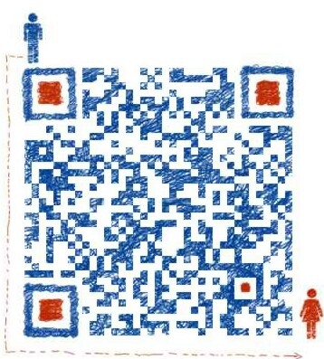

欢迎！
你好，我是龙猫大叔，我是一名前端工程师
我居住在西安，目前正在换工作中，我的简历 兴趣爱好：看书/骑车/跑步/摄影/登山 职业目标：成为一个卓越的互联网前端开发架构师 技术方向：Web App，Response Web Dev，Mobile First Dev，熟悉了解Nodejs，Angularjs，BackboneJS，Bootstrap，Less，MVC，JS等技术
我的电子邮箱：unclelongmao@gmail.com
我的微信帐号：
© 2014 All rights reserved.